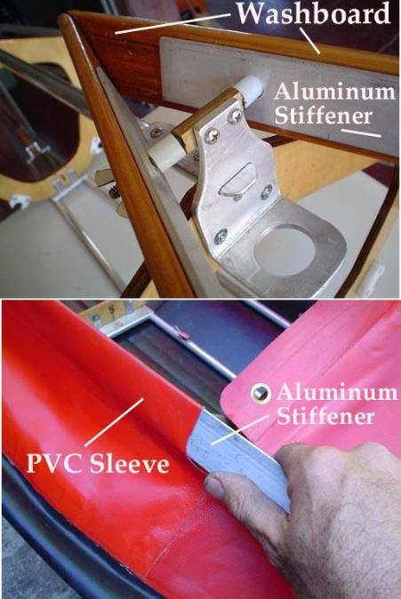
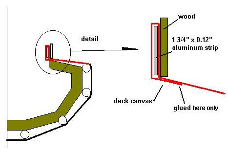

| Washboard Attachment (1 of 2) | Menu Previous Page Next Page |
|  |
Washboards (Coaming)
1. Many folding kayaks have a large open cockpit. This requires a different skin attachment than for the small coamings described in the previous section. The method illustrated below calls for an aluminum plate that attaches to the inside of the washboards.
 2. A PVC sleeve is made by gluing a flap of the deck skin around the aluminum plate. During assembly, the plate is inserted into the sleeve and then bolted to the inside of the washboard at several locations.
Photos courtesy of Rodolfo Maurette/ar |